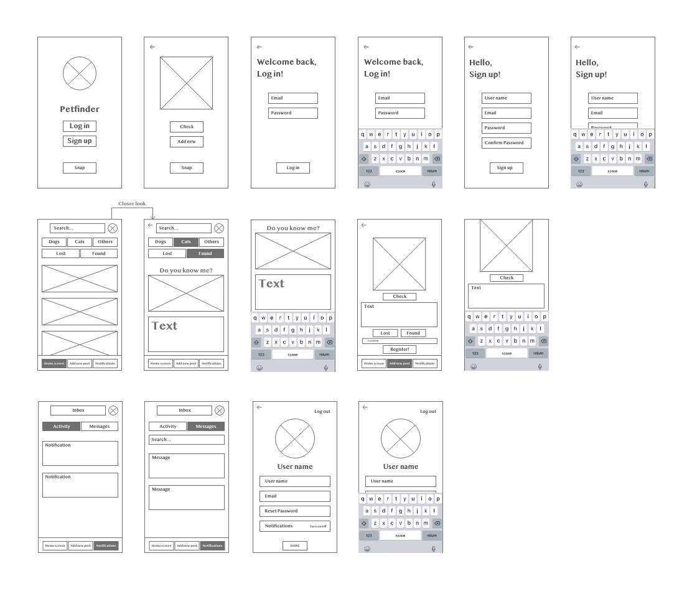
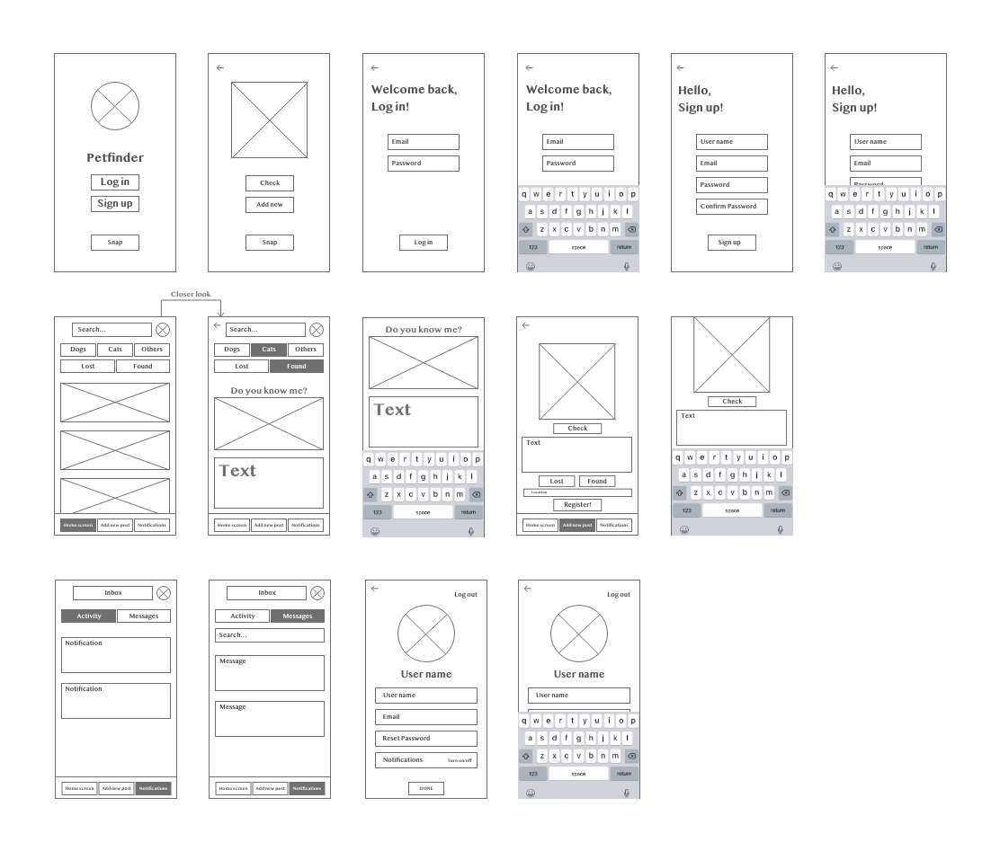

PetFinder Mobile App
PetFinder is a mobile application designed to find lost dogs, cats, parrots, hamsters, iguanas, spiders and our other little friends that we love so much.
It was created as a part of my portfolio with a view to show an easy, fast and effective way of using just one app for searching lost pets instead of making posters and posts in various social networks.
My roles
- Product Strategy
- User Research
- Visual design
- Prototyping & Testing
Background and understanding the problem
Every time we path a cat or a dog sitting alone on the street we wonder if they are homeless or just like to walk and play freely. What if we could find it out in seconds with a phone camera and a mobile app?
Product vision and solution
There are no similar apps in Russia, and pet owners still use various social networks groups for searching lost pets, which takes a lot of time and not that effective.
I decided that solution here is a simple, nice and easy to use product both for the owners and for those who help with finding pets, as they are an important link in a chain of successful reunion.
Sitemap
How it works
You don’t have to create an account to start using the app!
See a cat or a dog sitting somewhere without a leash or an owner? Check if this animal is missing in four steps!
- Open the PetFinder
- Choose camera mode
- Take a picture
- Press the button “Check”
User Persona Groups:
Olivia - Lost her dog
Olivia is a 35 year old female living with a partner in St. Petersburg, Russia, and she lost her dog Sam.
Olivia is an economist, she works remotely these months and walks with Sam 3 times a day near her place.
“Yesterday evening Sam got scared of the fireworks and ran away while we were walking. I can’t find him and need help”
Elena - Owns a cat
Elena is a 22 year old single female living with her cat Mimi in St. Petersburg, Russia.
She is a student and studies online these months and likes to walk with Mimi 5 times a day near her place.
“Mimi is a member of my small family and I love her so much!”
Elena’s goals and needs:
“I want to help other dog and cat owners in finding their missing pets”.
Elena’s motivation:
she puts herself in place of pet searchers and empathises them.
Designs
First I created lo-fi wireframes.
 

Then I made a clickable prototype in Adobe XD. You can try it here
Soft gradient and calming colours reduce the level of stress and sadness because of pet missing or the searching process (pastel green, blue and rose, that symbolises hope) and neutral grey for font and icons.